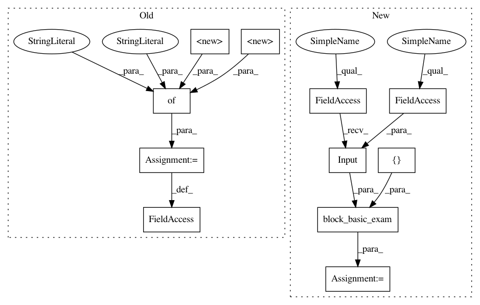

2e3ecf5ad4817912b14f8e17625aaa24185081c6,tests/autokeras/hypermodels/wrapper_test.py,,test_timeseries_block,#,53
Before Change
block = graph_module.deserialize(graph_module.serialize(block))
block.column_names = ["0", "1"]
block.column_types = {
"0": adapters.NUMERICAL,
"1": adapters.NUMERICAL,
}
output = block.build(hp, ak.TimeseriesInput(shape=(32,), lookback=2).build())
assert isinstance(output, tf.Tensor)
After Change
"0": adapters.NUMERICAL,
"1": adapters.NUMERICAL,
}
outputs = utils.block_basic_exam(
block,
tf.keras.Input(shape=(32, 2), dtype=tf.float32),
[],
)
assert isinstance(nest.flatten(outputs)[0], tf.Tensor)
In pattern: SUPERPATTERN
Frequency: 4
Non-data size: 11
Instances
Project Name: keras-team/autokeras
Commit Name: 2e3ecf5ad4817912b14f8e17625aaa24185081c6
Time: 2020-05-20
Author: jin@tamu.edu
File Name: tests/autokeras/hypermodels/wrapper_test.py
Class Name:
Method Name: test_timeseries_block
Project Name: jhfjhfj1/autokeras
Commit Name: 2e3ecf5ad4817912b14f8e17625aaa24185081c6
Time: 2020-05-20
Author: jin@tamu.edu
File Name: tests/autokeras/hypermodels/wrapper_test.py
Class Name:
Method Name: test_timeseries_block
Project Name: keras-team/autokeras
Commit Name: 2e3ecf5ad4817912b14f8e17625aaa24185081c6
Time: 2020-05-20
Author: jin@tamu.edu
File Name: tests/autokeras/hypermodels/wrapper_test.py
Class Name:
Method Name: test_structured_data_block